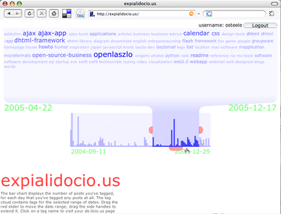

Expialidocio.us uses the OpenLaszlo platform and the del.icio.us API to display an interactive histogram and time-specific tag cloud of your posting activity.
Expialidociou.us requires the Flash plugin. If the plugin is already installed, click here.